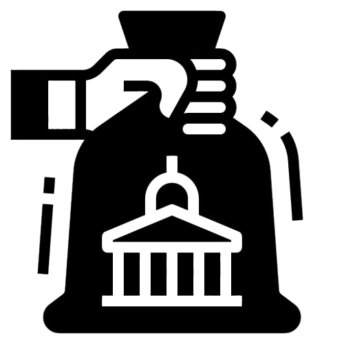

Subsidy Schemes
Get financial support for modern farming techniques.
Loan Schemes
Easy access to loans for agricultural development.
Crop Insurance
Secure your crops with affordable insurance plans.
 FARMIFY Schemes Hub
FARMIFY Schemes Hub Get financial support for modern farming techniques.
Easy access to loans for agricultural development.
Secure your crops with affordable insurance plans.